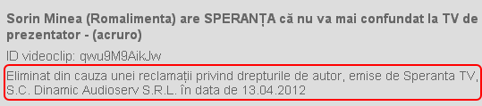

- Sunt Liviu Dumitraşcu, realizator şi director de programe la Speranţa TV. Discutăm astăzi, în emisiunea Perspective, despre droguri, cu invitatul nostru, domnul doctor psihiatru Eugen Hrişcu.
- Nu mă cheamă aşa. Eu sunt Sorin Minea!
- Sorin Minea! Sorin Minea? De ce oare am făcut această gafă de proporţii?
- Nu ştiu. Puteam să admit că mă cheamă cum vreţi dacă tot m-aţi invitat la emisiune.
- Da, da. Din discuţiile anterioare, se pare că sunteţi un mare împătimit al…ăăă…să vorbim despre pasiunea dvs. de a merge la vânătoare!
- Ştiţi, eu, Sorin Minea, reprezint industria alimentară şi sunt medic veterinar.
Dialogul penibil, pe care îl puteţi urmări (în versiunea completă) în videoclipul următor, nu e scenă dintr-o piesă de teatru absurd, ci un episod emblematic din realitatea televiziunilor româneşti.
Sorin Minea confundat la Speranta TV… de acru_ro
Sorin Minea, un necunoscut?
Dragă cititorule, tu ştii cine e domnul din această fotografie? Da, e unul dintre cei mai notorii oameni de afaceri locali. Sorin Minea e co-fondatorul şi acţionarul majoritar al Grupului Angst Ro, preşedintele federaţiei patronale Romalimenta, a candidat din partea PD-L la funcţia de deputat, conduce Asociaţia Română a Cărnii. Minea apare la televizor şi e citat de presă mai frecvent decât majoritatea parlamentarilor.
Practic, Sorin Minea e unul dintre cele mai mediatizate personaje în emisiunile informative şi dezbaterile televizate. Cum apare o ştire legată de scumpiri la alimente, Sorin Minea e invitat. Se discută despre calitatea mezelurilor? Minea e în studiouri. Vine vorba despre politica hipermarketurilor sau TVA la produse de bază? Sorin Minea e expertul citat.
Teoretic, un realizator de emisiune (şi director de programe, pe deasupra) precum Liviu Dumitraşcu e conectat la actualitate, informat şi dotat cu o minimă cultură generală cotidiană. La fel şi echipa de producţie a televiziunii. Şi totuşi, nimeni de la SperanţaTV n-a auzit vreodată de Sorin Minea! L-au chemat din greşeală şi nici după începerea emisiei n-au realizat cine e omul cu care stau de vorbă în direct.
Copyright pe prostie
 Ridicolul suprem al episodului Minea la Speranţa TV a asigurat emisiunii Perspective notorietatea cuvenită. Probabil că aţi văzut deja imaginile şi cunoaşteţi scena. Ce nu ştiaţi e că postul Speranţa TV îşi protejează dreptul de autor pe prostie şi insistă că penibilul poate fi difuzat doar la canalul Bisericii Adventiste de Ziua a Şaptea.
Ridicolul suprem al episodului Minea la Speranţa TV a asigurat emisiunii Perspective notorietatea cuvenită. Probabil că aţi văzut deja imaginile şi cunoaşteţi scena. Ce nu ştiaţi e că postul Speranţa TV îşi protejează dreptul de autor pe prostie şi insistă că penibilul poate fi difuzat doar la canalul Bisericii Adventiste de Ziua a Şaptea.
La nici câteva ore distanţă de momentul în care am încărcat clipul de mai sus pe Youtube, grabnicii paznici ai virtualului au şi făcut reclamaţie, deşi portalul de filme musteşte de înregistrări ale emisiunilor Speranţa TV, provenite din variate surse. Aşadar, exclusiv imaginile cu Sorin Minea sunt “protejate”, nu şi restul de 1300 de înregistrări care se zbenguie libere pe Youtube. În urmă cu o săptămână, am primit asta:

Aşadar, facem cuvenitele rectificări, în paragraful următor:
Toate drepturile de autor asupra gafelor monumentale aparţin postului SperanţaTV. Numai Speranţa TV poate difuza imagini cu invitaţi confundaţi de prezentatori aerieni. S.C. Dinamic Audio-Serv S.R.L., ai cărei asociaţi sunt Biserica Creştină Adventistă de Ziua a Şaptea din România, Uniunea de Conferinţe şi Asociaţia Susţinătorilor Centrului Media Adventist are exclusivitate asupra comediei involuntare în care Sorin Minea e luat drept medic psihiatru. Liviu Dumitraşcu se poate face de râs numai la emisiunile difuzate de Speranţa TV. Copyright-ul pe amatorism, ignoranţă şi ridicol aparţine exclusiv titularului deţinătorului licenţei audiovizuale pentru canalul SperanţaTV. Dinamic Audio-Serv vă prezintă în exclusivitate talk-show-urile cu invitaţi surpriză de care moderatorul n-a auzit în viaţa lui şi pe care nu-i identifică nici după ce bieţii oameni se prezintă. La Speranţa Tv.
Unul dintre motivele pentru care calitatea emisiunilor comice a scăzut dramatic e abundenţa umorului involuntar. Ce nevoie de actori hazlii mai avem când există jurnalişti, reporteri şi prezentatori care se substituie “marilor comici ai micului ecran“? Apoi, în tentativa de a atinge culmea ilarului, îşi clamează drepturile de autor asupra prestaţiilor distractive.


{kind=link}
{kind=link}
La inceput, moderatorul a zis ca discuta despre droguri usoare. De unde stiti ca nu s-a documentat practic pentru ca sa vorbeasca in cunostinta de cauza?
Comments on this entry are closed.